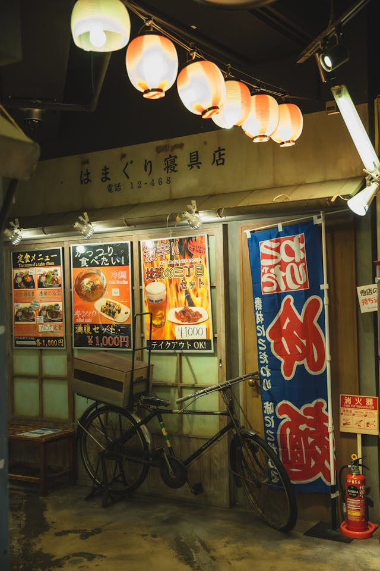

En Yumaru, nos esforzamos por ofrecerte una experiencia auténtica con nuestros productos cuidadosamente seleccionados. Desde nuestra apertura, hemos sido apasionados por la cultura japonesa y nos enorgullece compartirla contigo a través de nuestra cafetería. Descubre más sobre nuestra historia y los valores que nos definen.
"Yumaru nació del sueño de ofrecer una experiencia auténtica japonesa en Mérida. Fundada en 2020 por Daniel Tanaka, un apasionado de la cultura y gastronomía japonesa, Yumaru se ha convertido en un lugar emblemático para los amantes de la buena comida y el ambiente acogedor. Desde nuestros inicios, hemos estado comprometidos con la calidad y el servicio. Nuestros chefs han sido capacitados en Japón para traer a nuestros clientes el auténtico sabor del país del sol naciente. Cada detalle en nuestra cafetería ha sido cuidadosamente seleccionado para crear una atmósfera que transporta a Japón. Nuestra misión es brindar una experiencia que celebre la rica tradición japonesa mientras la adaptamos a las preferencias locales. A lo largo de los años, hemos organizado numerosos eventos culturales, desde ceremonias del té hasta talleres de cocina, fortaleciendo nuestro vínculo con la comunidad y enriqueciendo la vida cultural de nuestra ciudad."